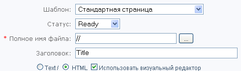
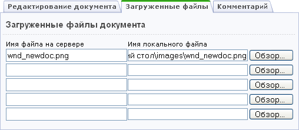

- Выберите шаблон страницы (например, Стандартная страница или Включаемая область для Раздела или Страницы).
- Укажите статус, который будет присвоен документу после сохранения. Например, Draft (Черновик).
- В поле Полное имя файла укажите полное имя файла. Например,
/ru/about/contacts.php. Либо воспользуйтесь кнопкой для выбора файла.
для выбора файла. - Введите Заголовок страницы. Например, Контактная информация:
- Разместите на странице необходимую информацию. Для выбора режима редактирования нужно отметить флагом соответствующее поле.
- Перейдите на вкладку Загруженные файлы и загрузите файлы (изображения и т.п.), используемые на новой странице.
Для использования в документе ссылок на какие-либо файлы (jpg, gif, pdf и т.д.) пользователю необходимо загрузить их в документ. Т.е. если вы используете в тексте какие-либо изображения, то необходимо указать их название и ссылку на них в поле Загруженные файлы. После публикации документа все загруженные в него файлы переносятся в указанные каталоги.

- На вкладке Комментарий разместите дополнительную информацию для других пользователей.
- Нажмите кнопку Сохранить.
| © «Битрикс», 2001-2008, «1C-Битрикс», 2008 | 1С-Битрикс: Управление сайтом |